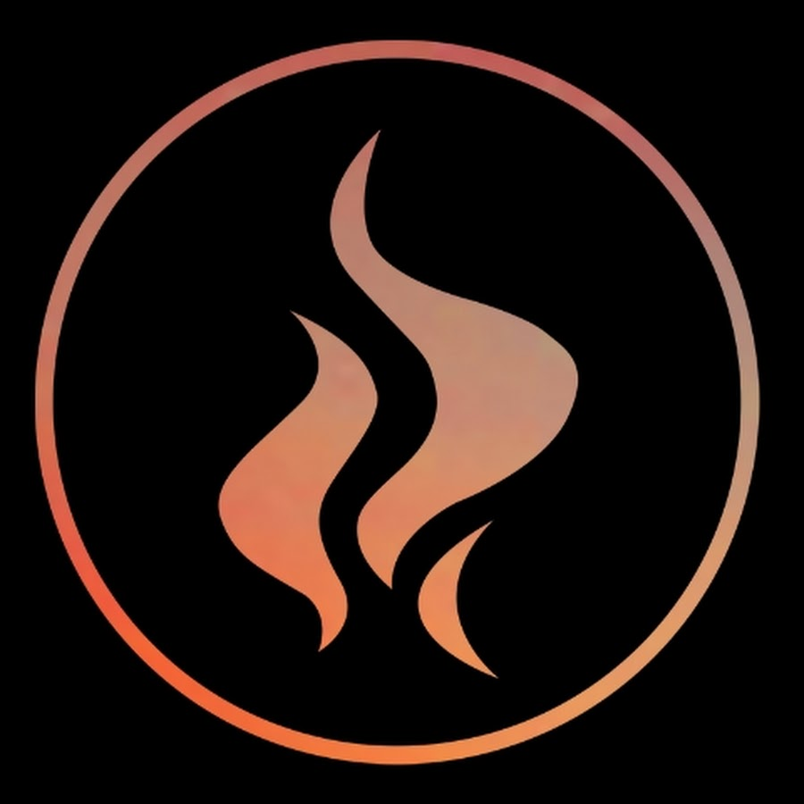

Sobre a Igreja Impactados
A Igreja Impactados como é conhecida, tem mais de 8 anos como igreja, sendo Pastoriada pelo Bispo Rinaldo Silva e Bispa Cecília, juntos com outros líderes e pastores.
A igreja Impactados têm como conograma de seus cultos o seguinte:
| Dia | Horário:Começo | Horário:Termino |
|---|---|---|
| Segunda-Feria | 19h30 | 21h30 |
| Quinta-Feira | 19h30 | 21h30 |
| Sexta-Feira | 19h30 | 21h30 |
| Sexta-Feira | 22h00 | 24h00 |
| Sábado | 19h30 | 21h30 |
| Domingo | 10h00 | 12h00 |
| Domingo | 17h00 | 19h00 |
| Domingo | 19h30 | 21h30 |
Existem outros ministérios como ADI e Jimp onde direcionam adolecentes e jovens a andar no caminho do Senhor, respectivamente.
História sobre a Igreja Impactados
Desde pequeno Bispo Rinaldo prega o evangelho, sendo mais exato desde os 7 anos de idade, e na sua caminhada Deus mostra-lhe atráves de sonhos e profécias sobre a igreja, passado tempo, fundou-se a Igreja Impactados tendo atualmente mais de 8 anos como Igreja, além de terem mais de 10 mil membros na atualidade, movendo-se em curas e milagres, como cego ouvir, surdo falar e cadeirante andar, tudo isso e mais é presenciado em seus cultos.